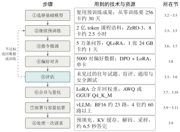

3.12 综合案例：一个 7B 课程问答模型的诞生
回到本章开头的问题：一所高校要为一门专业课程做问答模型，部署在自己的服务器上。从选型到回答学生的第一个问题，要经过哪些步骤，每一步用到本章哪些技术、需要多少资源？本节按图 3-24 的八个步骤，用前面各节的公式逐一估算。结论是：借助开源基础模型和参数高效微调，资源需求从“数百张 GPU、数月”降到“几张 GPU、几天”；决定最终效果的往往不再是算力，而是数据质量和评估的严谨程度。
学生可以随时提问课程中的概念、公式和习题思路，模型给出准确、清楚的讲解；遇到作业题时引导思路而不是直接给出答案；数据不出校园。为使估算具体，本节以 Qwen2.5-7B 的结构为例，各步骤中的数据量（如 2 亿 token 的课程语料、5 万条指令数据、5000 对偏好数据）是为计算而设定的假设值，实际项目应按自己的数据替换。该模型实际参数量约 \(7.6\times10^{9}\)，28 层，隐藏维度 3584，28 个查询头，4 个 KV 头，每头 128 维。第 4 章第 4.6 节为同类助手做过一次系统设计，侧重“检索 + 推理服务”；本节侧重“把模型训练出来”，两者可以组合。

图 3-24 课程问答模型从选型到上线的完整流程。①～④对应“怎么造”，⑥～⑧对应“怎么跑”；高亮的评估环节决定能否进入部署，不达标就回到数据或训练环节
3.12.1 第一步：选择基础模型，而不是从零预训练
从零预训练一个 7B 模型要多少资源？按式 （3-16），用 2 万亿 token 训练，计算量为 \(6\times(7\times10^{9})\times(2\times10^{12})=8.4\times10^{22}\) FLOPs。在 256 张 A100 上，按每卡有效算力 125 TFLOP/s（MFU 约 40%）计，需要 \((8.4\times10^{22})\div(256\times1.25\times10^{14})\approx2.6\times10^{6}\) 秒，约 30 天，还不包括数据准备、调试和故障恢复。对一门课程而言，这样的投入没有必要。合理的做法是选择一个已完成预训练的开源基础模型作为起点，这正是“预训练一次投入、多次复用”（第 3.1 节）。选择时主要看：中文能力和与课程相关的知识水平，许可证是否允许所需的使用方式，模型规模与可用硬件是否匹配。
3.12.2 第二步：领域继续预训练
如果课程涉及大量通用模型不熟悉的专业知识，先收集教材、讲义、课程笔记、相关论文等无标注文本，按第 3.3 节的流程清洗、去重、脱敏，并剔除准备用作测试的往年试题，然后做继续预训练。设整理出约 2 亿 token 的课程语料，计算量为 \(6\times(7.6\times10^{9})\times(2\times10^{8})\approx9.1\times10^{18}\) FLOPs，在 8 张 A100 上约需 \((9.1\times10^{18})\div(8\times1.25\times10^{14})\approx9100\) 秒，约 2.5 小时。全参数训练的模型状态约 \(7.6\times16\approx122\,\text{GB}\)（表 3-7），用 ZeRO-3 或 FSDP 分摊到 8 张卡上，每卡约 15 GB，另加激活值。为避免灾难性遗忘，在课程语料中混入一定比例的通用语料，并使用较小的学习率。
3.12.3 第三步：指令微调
数据 综合第 3.6 节的方法：把教材例题和课后习题整理成“问题—解答”对；以教材章节为参考，让更强的大模型生成多样化的问答；再由助教抽查修改。设最终得到 5 万条，平均每条约 500 个 token，另混入约 20% 的通用指令数据以保持对话能力。所有数据按模型的对话模板拼接，只在回答部分计算损失。
配置 采用 QLoRA：底座以 NF4 加载，在全部线性层（注意力的 q、k、v、o 和前馈网络的 gate、up、down，不含嵌入层与输出层）上加 \(r=16\) 的 LoRA。按 Qwen2.5-7B 的形状逐层计算，可训练参数约 \(4.0\times10^{7}\) 个。模型状态约为 \((7.6\times10^{9}\times4.127)\div8\div10^{9}+(4\times10^{7}\times16)\div10^{9}\approx3.92+0.64\approx4.6\,\text{GB}\)，加上开启激活重计算后的激活值，一张 24 GB 的消费级显卡即可完成训练。
时间 课程数据 5 万条 × 500 token × 3 轮，共 \(7.5\times10^{7}\) 个 token；再加 20% 的通用数据，约 \(9\times10^{7}\) 个 token。底座冻结后，前向（\(2N\)）和反向中对激活值求梯度（约 \(2N\)）仍要对全部权重做，只省掉了对底座权重求梯度的约 \(2N\)，所以每个 token 约 \(4N\) 次运算：\(4\times(7.6\times10^{9})\times(9\times10^{7})\approx2.7\times10^{18}\) FLOPs。单卡有效算力约 50 TFLOP/s（4 位底座需反复反量化，效率低于 BF16 训练）时，约需 \((2.7\times10^{18})\div(5\times10^{13})\approx5.5\times10^{4}\) 秒，约 15 小时，一天之内可以完成。
3.12.4 第四步：偏好对齐
指令微调后的模型能回答课程问题，但详略和讲解方式未必符合教学需要。例如学生问作业题时，希望模型引导思路而不是直接给最终答案。这类“风格和行为”上的要求适合用偏好对齐实现。准备约 5000 个问题，让 SFT 模型对每个问题生成两个回答，由助教按事先制定的标准（准确性、讲解清晰度、是否符合教学要求）选出较好的一个，得到 5000 对偏好数据；人力有限时，也可以按同样标准让更强的大模型当评判者（RLAIF 的思路），再由助教抽查。然后在 SFT 模型基础上用 DPO 继续训练，只需策略和参考两个模型，同样可以用 LoRA 在单卡上完成。
3.12.5 第五步：评估
部署之前必须系统评估。准确性：用往年试题等没有出现在训练数据中的题目构成测试集（防止数据污染），比较基础模型、SFT 模型和 DPO 模型的正确率。人工评估：请助教和学生对一批真实问题的回答盲评。通用能力：在通用基准上检查是否出现明显的能力退化。安全性：检查面对不当请求时能否正确拒绝，微调是否削弱了原有的安全对齐。各项达到预期才进入部署；否则回到数据或训练环节调整。
3.12.6 第六步：合并与量化
训练得到的 LoRA 模块按 \(W=W_0+\frac{\alpha}{r}BA\) 合并回原始权重，得到与原模型结构相同、以 BF16 存储的完整模型，约 \(7.6\times10^{9}\times2\approx15.2\,\text{GB}\)。再按部署方式选择量化方案：在服务器上用 vLLM 部署时，可以保持 BF16，或用 AWQ、GPTQ 量化为 4 位以容纳更多并发；若希望学生在自己的电脑上离线使用，转换为 GGUF 格式的 Q4_K_M 版本（约 4.7 GB），通过 Ollama 或 LM Studio 运行（例 3-12）。
3.12.7 第七步：部署与容量估算
学校用一台配有一张 24 GB 显卡、显存带宽约 1 TB/s 的服务器，以 vLLM 部署 BF16 版本：
推理框架可用 90% 的显存，即 \(24\times0.9=21.6\,\text{GB}\)（显卡标称的 24 GB 实为 24 GiB，约 \(25.8\times10^{9}\) 字节；这里按 \(24\times10^{9}\) 字节计，估算略偏保守）；
权重约 15.2 GB，框架和临时张量约 1 GB，剩余 \(21.6-15.2-1=5.4\,\text{GB}\) 给 KV 缓存；
每 token 的 KV 缓存为 \(2\times28\times4\times128\times2=57\,344\) 字节，5.4 GB 可容纳 \((5.4\times10^{9})\div57\,344\approx94\,168\) 个 token；每段对话按占满 4096 个 token 计，\(94\,168\div4096\approx22.99\)，并发数要向下取整，最多同时容纳 22 个完整的对话；这是上限估算的保守情形，实际对话通常更短，能服务更多。
以 RTX 4090 一类显卡（显存带宽约 1008 GB/s）为例，单请求解码速度上限约为 \(1008\div15.2\approx66\) token/s（式 （3-35），忽略 KV 缓存的读取量）。若并发需求更高，改用 4 位量化版本：权重按 Q4_K_M 约 0.62 字节/参数计，为 \(7.6\times10^{9}\times0.62\approx4.7\,\text{GB}\)（与例 3-12 的文件大小一致），KV 缓存可用约 \(21.6-4.7-1=15.9\,\text{GB}\)，可容纳 \((15.9\times10^{9})\div57\,344\approx2.77\times10^{5}\) 个 token，即 \(277\,000\div4096\approx67.7\)，最多约 67 个 4096 token 的对话；单请求的解码上限也随之提高到约 \(1008\div4.7\approx214\) token/s。仍不够时，再考虑增加显卡、使用张量并行。
3.12.8 第八步：处理一次用户请求
部署完成后，一名学生在网页上提问“什么是 KV 缓存？”，系统内部依次发生：
服务端把系统提示和问题按对话模板拼接，分词器把它转换为约 100 个 token；
推理引擎把请求加入连续批处理队列，用 PagedAttention 为它分配 KV 缓存块；若系统提示与其他请求相同，直接复用前缀缓存；
预填充：并行处理这约 100 个 token，建立初始 KV 缓存，生成第一个 token，学生在不到一秒内看到回答开始出现（TTFT）；
解码：逐个生成后续 token，每步读取权重和 KV 缓存，并把新 token 的 K、V 追加到缓存中；
每一步按设定的解码策略选 token：知识问答采用较低温度（如 \(\tau=0.3\)）加 Top-P，降低随机性，使回答更稳定；
生成的 token 实时转换回文字，以流式方式推送到屏幕，直到结束标记。回答约 300 个 token、TPOT 约 20 毫秒时，按式 （3-36），整个回答约 \(0.5+299\times0.02\approx6.5\,\text{s}\) 完成（TTFT 按 0.5 秒计）。
表 3-21 汇总了整个案例。
表 3-21 课程问答模型案例的各步骤汇总
| 步骤 | 关键技术 | 主要资源 | 产物 |
|---|---|---|---|
| ① 选择基础模型 | 复用预训练成果 | — | 7B 基础模型 |
| ② 继续预训练 | 数据清洗、ZeRO-3 | 8 张 A100，约 2.5 小时 | 领域基础模型 |
| ③ 指令微调 | 指令数据、损失掩码、QLoRA | 1 张 24 GB 显卡，约 1 天 | 课程指令模型 |
| ④ 偏好对齐 | 偏好数据、DPO（或 RLAIF） | 1 张 24 GB 显卡 | 对齐后的模型 |
| ⑤ 评估 | 未见过的测试集、人工评估、安全测试 | 少量 GPU 与人力 | 评估报告 |
| ⑥ 合并与量化 | LoRA 合并、AWQ / GGUF 量化 | 单机 | 可部署的模型文件 |
| ⑦ 部署 | vLLM、连续批处理、PagedAttention | 1 张 24 GB 显卡 | 在线问答服务 |
| ⑧ 处理请求 | 预填充、KV 缓存、解码、采样 | — | 流式输出的回答 |
本节要点
整个案例体现了本章的主线：预训练提供能力（这里直接复用），继续预训练补知识，指令微调学格式，偏好对齐调行为，评估把关，量化与部署决定服务多少人、多快回答。每一步都可以先用本章的公式判断资源是否够用，再动手实测；而决定最终效果的，往往是数据质量和评估的严谨程度。